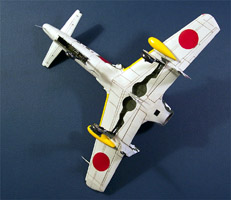
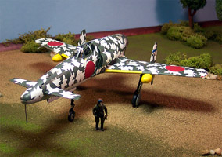
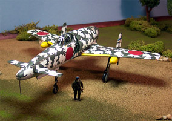

{kind=link}
{kind=link}
{kind=link}
{kind=link}
{kind=link}
{kind=link}
{kind=link}

J7W2 Turbojet conversion from the 1/48 Hasegawa J7W1
Model, images and text Copyright © 2004 by Matt Swan
Developmental Background
The Kyushu Company developed the J7W1 Shinden with the original intent to power it with a Japanese adaptation of the Jumo 004 Turbojet engine, the 900kp Ne-130 axial turbojet. This engine was still under development when the basic airframe had been completed so a conventional piston engine, the 2,130 horsepower Mitsubishi [Ha-43] 12 (MK9D) eighteen-cylinder air-cooled radial engine driving a six-blade metal pusher propeller was fitted to the aircraft for initial flight trials. In August 1945 this aircraft was successfully tested and production commenced as a propeller driven aircraft. During this time Harry Truman agonized over the option to utilize the nuclear bomb that the Americans had developed and decided against the option in favor of a conventional invasion of the Japanese homeland.
By the end of August 1945 the improved Ne-130A Turbojet engine with rudimentary afterburner (note the small outer fan) was available and this was immediately placed into production. Production of the aircraft as originally designed for this engine would require considerable retooling and several airframes were already complete for the piston engine version so these were quickly refitted with the Turbojet. These 65 aircraft were designated J7W2 and the next version with shortened landing gear, reduced stabilizers and bubble canopies were then produced as the J7W3.
When Allied bombers encountered this new weapon the shock was such that invasion plans had to be altered and the war dragged on into 1946. To support the upcoming invasion B-26 medium bombers and P-51 Mustangs were based on the Korean Peninsula. The Japanese Army had the Kyushu Company immediately retrofit the existing 65 J7W2 aircraft with long range drop tanks and based those aircraft on the tip of the peninsula which was still under Imperial control while new J7W3 aircraft rolling off the production line were employed as home defense fighters. This version was provisioned with two rocket pods mounted under the fuselage, each containing nineteen 50 mm unguided rockets. These proved most effective in defending the island from B-29 Superfortresses.
Those aircraft stationed in Korea were repainted with a green on white splinter camouflage to protect them from marauding Allied aircraft while on the ground. In the air they had little to fear with a top speed of nearly 600 MPH at 29000 feet under afterburner and a cruise speed of 387mph combined with exceptional maneuverability. Even the introduction of the P-80 Shooting Star was not adequate to stem the predations of the J7W2 fighters. Ultimately these efforts failed to prevail against the manufacturing might of the Allied advance and the Japanese Government surrendered to the Allies on May 7, 1947, exactly two years after the fall of the Nazi regime. Seven J7W1 airframes were completed and retained by Kyushu as test bed aircraft, 65 were completed as J7W2s and 245 were produced in the J7W3 configuration. Several J7W2 and J7W3 aircraft were ultimately acquired by private citizens and were briefly used as air racers until the Cleveland Air Circuit disqualified them from competition. Today there are only three of these fabulous steeds left in existence, one in Dayton Ohio, one at the Smithsonian Air and Space Museum and one in Bill Gates’ private collection in Redmond Washington.
The Kit
There is no kit for this aircraft in 1/48 scale. Hasegawa did make one in 1/72 scale but that item is no longer in production or available. If you want one of these in 1/48 scale you have to make one or at least convert something else into it like Hasegawa’s 1/48 J7W1 Shinden. Just follow that link for a full review of that kit. With that said let’s move on to the really fun stuff …. the construction/conversion phase. Put on your safety glasses and have the first aid kit handy because we are going to do some surgery.
Construction/Conversion
The first order of business is to remove all those nasty raised panel lines from the Hasegawa kit and replace them with engraved panel lines. This entire process is detailed in my Systematic Approach to Scribing. As you can see I’ve gotten a lot of mileage out of this kit, a review, a tips article and now a construction feature. Talk about a lot of bang for the buck.
The J7W2 never existed anywhere but on a drawing board, that line drawing above is actually what was actually found of the aircraft. For the purposes of this feature and to make my life just a little easier I am calling that the J7W3 and proposing the J7W2 as an intermediate development aircraft. Doing this allows me to retain the kit canopy and not have to resize the landing gear bays. Construction begins benignly enough with basic interior painting and assembly. The cockpit (I did add some PE seat belts here) was secured into the fuselage and the halves were joined. Before gluing the canards in place I superglued several lead fishing sinkers into the nose to prevent tail sitting. The wings were assembled and set aside.
In order to feed a Turbojet engine we need to provide more airflow and this is accomplished with enlarged air intakes. I used a piece of balsa wood to carve a master for this intake then fixed it to an old paint brush handle which was then firmly planted in a large chunk of modeling clay. Next I take a good thick piece of styrene stock sheet and hold it over a candle to soften it up. I tried doing this over a light bulb but it was taking forever - the candle worked great. Once it was soft and sagging I pulled it down over the master. It cooled almost immediately and I was able to lift it off the master without any difficulty. The new intake was cut from the sheet and trimmed close with a razor knife. Then I sanded it down until I had reached the slight demarcation line made by the lower edge of the master. The kit intake pieces were secured to the fuselage with some Blue Tac and the new intake was placed overtop it so I could mark the cut-off area for the front end. This was cut and the edges were cleaned up with some fine sandpaper. This entire process is what’s called “Plunge Molding”.
You can click on the above images to view larger pictures
This process is repeated for the other side and the pieces are set aside. Time for some surgery, as I go through this you should remember that each little picture in this section is linked to a larger picture so if you care to study these steps in more detail simply click that small image. First those original small air intakes need to go. I begin with a cutting wheel on my trusty Dremel unit and slice the largest amount of material off. I leave a small amount of the back of the intake on the fuselage to act as a guide for placing the new intake. The rest of the area is cleaned up with a razor knife and sandpaper. The J7W1 configuration includes oil cooler intakes right behind the small intakes and since we no longer require a large oil reservoir these need to go also. For this I switch to a sanding drum on the Dremel and sand the protruding areas off as flush as possible. I have to move is small increments, as the plastic wants to heat up and melt. I plan on using Squadron White putty to smooth out the fuselage but I need something to support it so I have cut several small rectangle of stock sheet to glue to the interior of the fuselage.
Each of these pieces is secured with Tenax 7R, held in place until the glue has a chance to begin to set then allowed to fully cure. While this is happening I move to the back half of the oil cooler, since we have removed the intake there certainly is no need for an exit. This area is also sanded off with the sanding drum and smoothed out to conform to the rest of the fuselage. I did not break through the existing plastic but it became very thin so I added more sheet stock inside these areas for additional support. Now I can start applying putty. Using my small trowel I fill all the large holes (actually over two to three applications). Smooth it out with some acetone based fingernail polish remover on a cotton swab and let it set up. It’s finished off with progressively finer grades of sandpaper until the finish is smooth.
I have to rescribe a couple of panel lines and clean out a few existing lines that had filled with sanding debris. Now I can paint. The interior of the new intakes are painted flat black and the corresponding areas on the fuselage are painted flat black also then the intake is glued into place. At first glance this appears to cover the visible aspect of the conversion but wait – we need a Turbojet engine sticking out of the backside of this baby.
I spent a lot of time thinking about how to approach this part of the conversion. I considered using an old 1/48 Jumo 004 engine from a Me-262 but that just didn’t look right for the aircraft. Then I considered using a more modern burner can from an F-14 or other contemporary jet aircraft but again, that did not look right. After about three passes through the spare parts box I had found an old 1/48-spinner cover from some now unidentifiable aircraft that looked right for a burner cone. I sanded the bottom off to remove the prop slots and give a more appropriate depth then started cutting the center out of the engine face of the kit.
I thinned the plastic from the inside of the part with a grinding burr mounted to the Dremel then carefully cut it out with my razor knife, I left the outer part of the cooling fan in place as part of my new Turbojet – a rudimentary afterburner! Using more stock sheet I build a new burner can to fit into the cut out opening. I glued the modified spinner cover to the original faceplate and inserted this into the new burner can. The bottom of the can was painted with Testors Brass, the walls with Gunze-Sangyo Burnt Iron and the burner cone with Model Master Steel.
Now that did not turn out too bad, did it? At this point I’m going to say the conversion work is done, basic construction continues from here. The wings and stabilizers are attached, seams are checked, panel lines are cleaned out and the nose strut is glued in place. At one point while doing this my sixteen-year-old daughter decided that my dedicated model room was a good place to do her nails and inadvertently kicked the model box and the entire clear parts sprue fell into a black hole. I guess this is as good a time as any to find out how well Dragon Customer Service is. We’ll touch back on this before too much longer but for now I have faith they will produce my needed parts and construction continues.
Once the basic construction was completed to this level I stuffed the burner can, cockpit area and all three landing gear bays with tissue paper slightly dampened with water. The entire model was primed with my usual 50/50 mix of Model Master Gray Primer and Lacquer thinner. All seams were double checked and repaired as needed and she was given a day to cure before proceeding. The wing leading edges were hit with some Testors Flat Yellow then masked off once dry. The underside was painted with Model Master Light Gray and the topside was done with Model Master Header Flat White. While these color coats were curing I started to cut masks for the camouflage scheme. I knew right from the start that a lot of these little buggers were going to be needed and had to devise a method of reducing the workload. I layered four strips of masking tape on my cutting surface then began to cut patterns in the tape using enough force to penetrate all four layers of tape. I cut about eighteen different shapes times the four layers giving me seventy-two individual masks. Now all I have to do is carefully lift each layer with the tip of my razor knife and apply the masks. It really was that easy and took about two hours to cut and mask the aircraft. A few more long strips to create a demarcation line from the top to the bottom colors and I’m ready to proceed. I spray the Gunze-Sangyo INJ Green over the masked area changing my angle of attack several times to give good coverage between the masked areas and then back to the work desk. The paint dried within half an hour to the point that I could begin to remove the masks.
These pictures link to larger pictures so go ahead and click
Now don’t that look pretty? Did you remember to bring your sunglasses?
So much for having faith, I heard back from Dragon today and they do not have the parts I need and think it could be quite a while before they can get them – bummer. I refuse to be stopped in this manner so am buying another one of these kits and getting a few spare P-47D bubble top canopies with it. Guess I will be able to make a J7W3 as well.
Moving right along it’s time to work over the landing gear. All three gear legs are painted flat black with silver oleos. Mounting the rear struts is a little tricky because they have a pronounced forward angle. Once I have them positioned the model is balanced on its tail for the night while the glue joints harden. The wheels are all mounted on toothpicks as paint handles and head for the paint room, I’ll paint the black tires then mask and paint the inner wheels silver. The small stabilizer wheels are painted in the same scheme.
I want to arm this with some kind of underwing stores. The two obvious choices would be drop tanks or rocket launchers. The kit comes with no stores at all so it’s back to the spares box. I could not find anything that fit for the rocket launcher but did find several options for drop tanks. I have a 1/72 scale J7W1 that I did years ago and it included drop tanks that were long and cylindrical. None of the tanks I found were even close, the options were; a set of drop tanks from Me-109s (have two that match) or a set of tanks from a Monogram Corsair but these are a little large for this plane and finally – the most promising, a set of slipper tanks from a Tamiya Mig-15. The slipper tanks don’t quite fit the wing angle so I adjust it with a diamond file. I also had to add a plastic shim to the back end of the tank where it meets the wing. Test fit looked pretty good so these went off to the paint room for a coat of primer then some flat yellow.
While these are drying other little details were addressed like putting the wheels in place, gluing the landing gear doors on and the nose cannon barrels. I also spent a little time going over that camo scheme fixing the little areas where paint blew under the masks.

The slipper tanks have been installed and the model gets a full coat of Future floor polish. Once this has cured for a day I proceed with a basic sludge wash to accent the panel lines. The decals presented some challenge trying to cover that wonderful splinter pattern. I found some white hinomarus decals of the same size as the kit offerings and laid them down first on the wing top surface in an attempt to soften the visual pattern. Even with this it still wanted to show through the decals. As I moved to the hinomarus on the fuselage side I changed my approach and put down two complete red markings, one over the other and this seemed to work slightly better. I probably should have masked the area and painted it white before applying the decals – lesson learned. Oh yeah, you can click on those two pictures above for larger images.
For other markings I raided the decals spares box for some fin markings, landing gear numerals and kill markings. All decals were set with Micro-Sol setting solution. This is very close to complete, I have to add some gun blast stains, some heat stress around the engine and a few oil stains plus I have to do the canopy. I had hoped that this would have arrived by this time but those hopes have been dashed. Maybe in the next few days that piece will be here and this project can be completed.
Finally my replacement canopy has arrived. I have already added the gun blast stains and heat stress to the rear with Tamiya X-19 smoke. The entire model was coated with Polly Scale Clear Flat and a little ground chalk was brushed over these areas to finish the effect. The clear pieces got the standard Future dip and were masked with strips of masking tape after that had cured. I painted them with Mitsubishi Interior Green first then INJ green overtop. Each piece was held in place on the model and the white patterns were finished with a brush. Testors Clear Parts Cement was used to attach the canopy.
Here is the final product.
Each of these pictures links to a larger image so just click on it for a better view.
 



{kind=link}
{kind=link}
{kind=link}
{kind=link}
{kind=link}
{kind=link}
{kind=link}